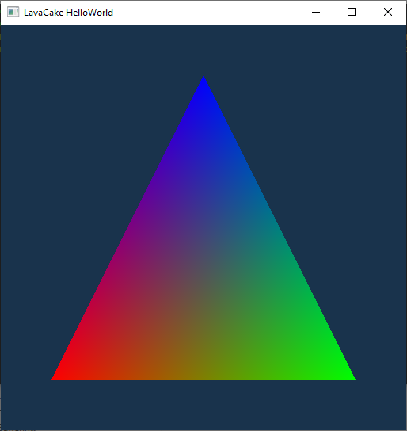

Hello World
Creating a Window
LavaCake uses glfw3 as a window manager by default. To create a init a GLFW Window :
glfwInit();
glfwWindowHint(GLFW_CLIENT_API, GLFW_NO_API);
GLFWwindow* window = glfwCreateWindow(512, 512, "HelloWorld", nullptr, nullptr);
The window should open itself after that.
To know if your window is still alive, call the function glfwWindowShouldClose(). This function returns true when the window is alive and false when the windows must be killed.
To refresh the Window, call glfwPollEvents()
A typical code to render using the LavaCake should look like this :
#include <LavaCake/Framework/Framework.h>
using namespace LavaCake::Framework;
int main() {
glfwInit();
glfwWindowHint(GLFW_CLIENT_API, GLFW_NO_API);
GLFWwindow* window = glfwCreateWindow(512, 512, "HelloWorld", nullptr, nullptr);
//Vulkan Initialisation
//Rendering setup
while (!glfwWindowShouldClose(window)) {
glfwPollEvents();
//render loop
}
}
Vulkan initialisation
To initialize Vulkan in LavaCake, you need to get a reference to the Device singleton provided by LavaCake and initialize it.
This singleton holds references to Physical and Logical Devices, Queues, Surface, and Instances.
To initialize the Device you first need to create a GLFWSurfaceInitialisator with the following Line:
GLFWSurfaceInitialisator surfaceInitialisator(window);
(The GLFWSurfaceInitialisator class inherits from the SurfaceInitialisator, if you need to use other windows manages, you can create your surface initialisator )
Device* device = Device::getDevice();
device->initDevices(0, 1, surfaceInitialisator);
Then we need to initialize the get a reference to the Swapchain singleton and initialize it.
This singleton holds the rendering parameter such as the output size, the color and depth format, etc…
This singleton will also provide the swapchain images required to draw on the screen.
SwapChain* swapChain = SwapChain::getSwapChain();
swapChain->init();
Rendering setup
We need to prepare all the resources we will need for the rendering.
Creating a command buffer
In Lavacake, command buffer are wrapped in the CommandBuffer class You can create them by simply initializing a CommandBuffer instance :
CommandBuffer commandBuffer;
Creating a Semaphore
In LavaCake, semaphores are wrapped by the Semaphore class; You can create them by simply initializing a shared pointer of a Semaphore instance :
std::shared_ptr<Semaphore> semaphore = std::make_shared<Semaphore>();
Getting the Queues :
In LavaCake, all the Queues are created and stored by the Device singleton. You can get a reference to a graphic Queue with the following Line:
GraphicQueue graphicQueue = d->getGraphicQueue(0);
with 0 being the index of the of the graphic queue.
You can get a reference to a Presentation Queue with the following Line:
PresentationQueue presentQueue = d->getPresentQueue();
Creating a mesh
To create a mesh, we first need to define the vertex format we will use. In our example, the vertices will be composed of a 3D position and a color.
vertexFormat format ({ POS3,COL3 });
Then we need to initialize a mesh:
std::shared_ptr<Mesh_t> triangle = std::make_shared<IndexedMesh<TRIANGLE>>(format);
We can now add vertices to the mesh:
triangle->appendVertex({ -0.75f, 0.75f, 0.0f, 1.0f , 0.0f , 0.0f });
triangle->appendVertex({ 0.75f, 0.75f , 0.0f, 0.0f , 1.0f , 0.0f });
triangle->appendVertex({ 0.0f , -0.75f, 0.0f, 0.0f , 0.0f , 1.0f });
We can now link the vertices together by creating a triangle:
triangle->appendIndex(0);
triangle->appendIndex(1);
triangle->appendIndex(2);
Creating a Vertex Buffer
You can create a vertex buffer create a shared pointer of a VertexBuffer :
//creating an allocating a vertex buffer
std::shared_ptr<VertexBuffer> triangle_vertex_buffer = std::make_shared<VertexBuffer>(
graphicQueue,
commandBuffer,
std::vector<std::shared_ptr<Mesh_t>>({ triangle })
);
Loading shaders
You can load shaders with the following commands :
VertexShaderModule vertexShader("path/to/the/shader.vert.spv");
FragmentShaderModule fragmentShader("path/to/the/shader.frag.spv");
Preparing a graphic pipeline
First, we need to get the size of the swaphchain :
VkExtent2D size = swapChain->size();
Then we can create a graphic pipeline that matches the size of the swapchain :
std::shared_ptr<GraphicPipeline> graphicPipeline = std::make_shared<GraphicPipeline>(
vec3f({ 0,0,0 }),
vec3f({ float(size.width),float(size.height),1.0f }),
vec2f({ 0,0 }),
vec2f({ float(size.width),float(size.height) })
);
Finally we can register the shaders and the vertex buffers into the graphic pipeline :
graphicPipeline->setVertexModule(vertexShader);
graphicPipeline->setFragmentModule(fragmentShader);
graphicPipeline->setVertices({ triangle_vertex_buffer });
Preparing a render pass
Now we can create a render pass by using the instancing a RenderPass object :
RenderPass renderPass;
We now need to add the graphic pipeline we create to the render pass. To do that, we need to prepare the information needed by the render pass to create the subpass that will wrap the graphic pipeline :
SubpassAttachment SA;
SA.nbColor = 1;
SA.storeColor = true;
SA.showOnScreen = true;
SA.showOnScreenIndex = 0;
By creating this structure, we describe the attachment required such that the subpass can be drawn. Here we describe a subpass that : - write in one color attachment - store its color attachments - will display its first color attachment on the screen
Finally, we can add the graphic pipeline and the subpass attachment descriptor to the render pass :
renderPass.addSubPass({ graphicPipeline }, SA);
renderPass.compile();
Preparing a frame buffer
First, we need to create a frame buffer :
FrameBuffer frameBuffer(size.width, size.height);
Then we need to prepare it for the render pass that will use it :
renderPass.prepareOutputFrameBuffer(graphicQueue, commandBuffer, frameBuffer);
Rendering
Reseting the command buffer
Before registering the command into the command buffer, we have to ensure it is in the right state. To do that, we can use the following lines:
commandBuffer.wait();
commandBuffer.resetFence();
Getting the swap chain image
To draw the image on the screen, we need to get an image from the swapchain. To do that, we can use the following Line:
const SwapChainImage& image = swapChain->acquireImage();
This will ask the swapchain to prepare a swapchain image for you to draw in. However, this image will not be ready right away.
To make sure it is ready when we need it, we need to prepare the Device to wait for the image. We can do it with the following lines :
std::vector<waitSemaphoreInfo> waitSemaphoreInfos = {};
waitSemaphoreInfos.push_back({
image.getSemaphore(), // VkSemaphore Semaphore
VK_PIPELINE_STAGE_COLOR_ATTACHMENT_OUTPUT_BIT // VkPipelineStageFlags WaitingStage
});
With these lines, we prepare a structure that holds the semaphore that will be raised when the image is ready and the stage that needs to wait for the semaphore. Here the pipeline will wait for the image to be ready before trying to write in the color attachment.
Finally, we want to register the swapchain image into our frame buffer :
renderPass.setSwapChainImage(frameBuffer, image);
Preparing the draw call
To draw on the screen, we need to register a draw call into our command buffer. To do that, we need to put it in a recording state :
commandBuffer.beginRecord();
Once it is in a recording state, we can register a draw call into it :
renderPass.draw(
commandBuffer,
frameBuffer,
vec2u({ 0,0 }),
vec2u({size.width, size.height }),
{ { 0.1f, 0.2f, 0.3f, 1.0f } }
);
Here we ask the render pass to create a draw call into the command buffer using the frame buffer. This draw call will draw in a diagonal square starting at the 0,0 coordinates and ending at the size.width, size.height coordinates. The last parameters describe the value used to reset the frame buffer.
We can now put the command out of the recording state :
commandBuffer.endRecord();
Finally, we can submit the command buffer so it can be executed by the Device:
commandBuffer.submit(graphicQueue, waitSemaphoreInfos, { semaphore });
Here we submit the command buffer to the graphic queue with waitSempahoreInfos we prepared and with a semaphore to raise when all the commands are executed.
Drawing on the screen
Now we can draw our result on the screen :
swapChain->presentImage(presentQueue, image, { semaphore });
Here we ask the swapchain to present an image on the screen using the presentation queue after the given semaphore has been raised.
Cleaning
Once we are done using Vulkan, we need to make sure all the commands we submitted to the Device are done before killing the application. To do that, you can use the following lines :
device->waitForAllCommands();
Final code
#define LAVACAKE_WINDOW_MANAGER_GLFW
#include <LavaCake/Framework/Framework.h>
using namespace LavaCake;
using namespace LavaCake::Geometry;
using namespace LavaCake::Framework;
int main() {
glfwInit();
glfwWindowHint(GLFW_CLIENT_API, GLFW_NO_API);
GLFWwindow* window = glfwCreateWindow(512, 512, "LavaCake HelloWorld", nullptr, nullptr);
GLFWSurfaceInitialisator surfaceInitialisator(window);
Device* device = Device::getDevice();
device->initDevices(0, 1, surfaceInitialisator);
SwapChain* swapChain = SwapChain::getSwapChain();
swapChain->init();
CommandBuffer commandBuffer;
std::shared_ptr<Semaphore> semaphore = std::make_shared<Semaphore>();
GraphicQueue graphicQueue = device->getGraphicQueue(0);
PresentationQueue presentQueue = device->getPresentQueue();
vertexFormat format ({ POS3,COL3 });
//we create a indexed triangle mesh with the desired format
std::shared_ptr<Mesh_t> triangle = std::make_shared<IndexedMesh<TRIANGLE>>(format);
//adding 3 vertices
triangle->appendVertex({ -0.75f, 0.75f, 0.0f, 1.0f , 0.0f , 0.0f });
triangle->appendVertex({ 0.75f, 0.75f , 0.0f, 0.0f , 1.0f , 0.0f });
triangle->appendVertex({ 0.0f , -0.75f, 0.0f, 0.0f , 0.0f , 1.0f });
// we link the 3 vertices to define a triangle
triangle->appendIndex(0);
triangle->appendIndex(1);
triangle->appendIndex(2);
//creating an allocating a vertex buffer
std::shared_ptr<VertexBuffer> triangle_vertex_buffer = std::make_shared<VertexBuffer>(
graphicQueue,
commandBuffer,
std::vector<std::shared_ptr<Mesh_t>>({ triangle })
);
VertexShaderModule vertexShader("Data/Shaders/helloworld/shader.vert.spv");
FragmentShaderModule fragmentShader("Data/Shaders/helloworld/shader.frag.spv");
VkExtent2D size = swapChain->size();
std::shared_ptr<GraphicPipeline> graphicPipeline = std::make_shared<GraphicPipeline>(
vec3f({ 0,0,0 }),
vec3f({ float(size.width),float(size.height),1.0f }),
vec2f({ 0,0 }),
vec2f({ float(size.width),float(size.height) })
);
graphicPipeline->setVertexModule(vertexShader);
graphicPipeline->setFragmentModule(fragmentShader);
graphicPipeline->setVertices({ triangle_vertex_buffer });
RenderPass renderPass;
SubpassAttachment SA;
SA.showOnScreen = true;
SA.nbColor = 1;
SA.storeColor = true;
SA.showOnScreenIndex = 0;
renderPass.addSubPass({ graphicPipeline }, SA);
renderPass.compile();
FrameBuffer frameBuffer = FrameBuffer(size.width, size.height);
renderPass.prepareOutputFrameBuffer(graphicQueue, commandBuffer, frameBuffer);
while (!glfwWindowShouldClose(window)) {
glfwPollEvents();
commandBuffer.wait();
commandBuffer.resetFence();
const SwapChainImage& image = swapChain->acquireImage();
std::vector<waitSemaphoreInfo> waitSemaphoreInfos = {};
waitSemaphoreInfos.push_back({
image.getSemaphore(),
VK_PIPELINE_STAGE_COLOR_ATTACHMENT_OUTPUT_BIT
});
renderPass.setSwapChainImage(frameBuffer, image);
commandBuffer.beginRecord();
renderPass.draw(
commandBuffer,
frameBuffer,
vec2u({ 0,0 }),
vec2u({ size.width, size.height }),
{ { 0.1f, 0.2f, 0.3f, 1.0f } }
);
commandBuffer.endRecord();
commandBuffer.submit(graphicQueue, waitSemaphoreInfos, { semaphore });
swapChain->presentImage(presentQueue, image, { semaphore });
}
device->waitForAllCommands();
}
Results
